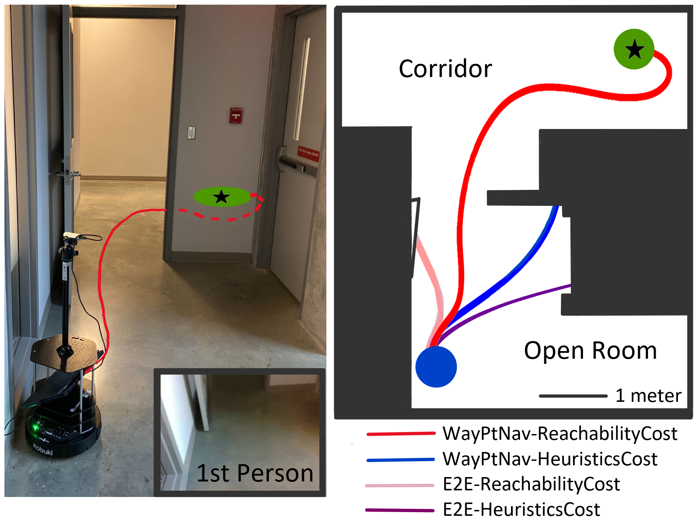

Hello! I am an undergraduate student at
Simon Fraser University pursuing a Bachelor of Science
degree in Computer Science, with a focus on Artificial
Intelligence. At SFU, I volunteer as an Undergraduate
Researcher in the Multi-Agent Robotic Systems laboratory
under professor Mo Chen, where I work in the area of automated
systems and machine learning.
Hello! I am an undergraduate student at
Simon Fraser University pursuing a Bachelor of Science
degree in Computer Science, with a focus on Artificial
Intelligence. At SFU, I volunteer as an Undergraduate
Researcher in the Multi-Agent Robotic Systems laboratory
under professor Mo Chen, where I work in the area of automated
systems and machine learning.
I am also very interested in software development. I am currently
in the midst of creating my own business, Incrementle Development,
which will focus on creating custom productivity applications for
the App Store and Play Store. Our first project - SwiftCalc is
set to launch in the next few months.
Research
My research aims to enhance the efficiency of algorithms
that run in exponential time through the use of new coding
languages. I also work in the area of visual navigation, where
I oversee the execution of neural networks on robotics equipment.
The abstract from my first paper citation can be seen below:
Generating Robust Supervision for Learning-Based Visual
Navigation Using Hamilton-Jacobi Reachability
Abstract:
< In Bansal et al. (2019),

a novel visual navigation framework that combines learning-based
and model-based approaches has been proposed. Specifically, a
Convolutional Neural Network (CNN) predicts a waypoint that is
used by the dynamics model for planning and tracking a
trajectory to the waypoint. However, the CNN inevitably makes
prediction errors, ultimately leading to collisions, especially
when the robot is navigating through cluttered and tight spaces.
In this paper, we present a novel Hamilton-Jacobi (HJ)
reachability-based method to generate supervision for the CNN
for waypoint prediction. By modeling the prediction error of
the CNN as disturbances in dynamics, the proposed method
generates waypoints that are robust to these disturbances, and
consequently to the prediction errors. Moreover, using globally
optimal HJ reachability analysis leads to predicting waypoints
that are time-efficient and do not exhibit greedy behavior.
Through simulations and experiments on a hardware testbed, we
demonstrate the advantages of the proposed approach for
navigation tasks where the robot needs to navigate through
cluttered, narrow indoor environments.
Software Development
Since beginning my second degree in Computer Science, I have undergone a thorough introduction into software development. So far, I have completed one major project at SFU - a web-based multiplayer game built off of the NodeJS framework. Currently, I am co-developing my first iPhone and Android application - SwiftCalc, which is an efficient, minimalistic calculator that aims to provide the utility of a scientific/graphing calculator with a profile no larger than that of the native calculator that comes installed on a new phone.
Current Work: SwiftCalc
 SwiftCalc is a calculator app that will offer the functionality
of a more powerful calculator with a minimalistic interface.
The app is built using Google's Flutter platform, which allows
for cross-platform development.
The calculator utilizes swipe gestures to allow users to access
multuple functions from a single button.
SwiftCalc is a calculator app that will offer the functionality
of a more powerful calculator with a minimalistic interface.
The app is built using Google's Flutter platform, which allows
for cross-platform development.
The calculator utilizes swipe gestures to allow users to access
multuple functions from a single button.
Past Work: S.F.U. Secial Fortification Unit
 S.F.U. is a web-based game built off of the NodeJS framework that
is currently running on Heroku's web hosting platform. The game
uses Socket.IO to enable multiple users to play in game lobbies.
The goal of the game is to navigate through the halls of Simon
Fraser University whilst destroying enemies (in the form of
bad grades). S.F.U. offers a unique and interactive gaming.
S.F.U. is a web-based game built off of the NodeJS framework that
is currently running on Heroku's web hosting platform. The game
uses Socket.IO to enable multiple users to play in game lobbies.
The goal of the game is to navigate through the halls of Simon
Fraser University whilst destroying enemies (in the form of
bad grades). S.F.U. offers a unique and interactive gaming.
I co-developed S.F.U. and played a large role in the development
of the game engine and web interface. I was also responsible for
writing tests for the game using Mocha and Chai.